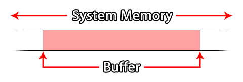

GameMaker Studio 2 dispose d'une série de fonctions dans GML pour gérer les buffers. La plupart des gens devraient être familiers avec ce terme car il est utilisé tout le temps quand il s'agit d'ordinateurs et de programmation, mais connaître le mot ne signifie pas que vous savez réellement ce que cela signifie. Cette page a donc pour but d'expliquer ce qu'est un buffer et comment l'utiliser dans le contexte de la GameMaker Studio 2 de GameMaker Studio 2, bien que la manière générale de travailler soit la même quelle que soit la langue ou la technologie, ce qui explique tellement important.
Un tampon (en programmation) est essentiellement un espace dans la mémoire système qui est utilisé pour stocker de petits paquets de données pour à peu près n'importe quoi (par exemple, transfert de données, collisions, données de couleur, etc...). Comme il est stocké dans la mémoire système, il est très rapide d'accès, et un tampon est généralement utilisé pour le stockage à très court terme, comme la réception d'informations réseau avant de le traiter, ou pour stocker un point de contrôle dans votre jeu. exemple donné plus bas sur la page).  Les tampons sont créés en allouant un espace dans la mémoire du système, calculé en octets, qui est alors réservé à votre jeu tant que votre jeu est en cours ou jusqu'à ce que vous supprimiez le tampon en utilisant la fonction appropriée. Cela signifie que même lorsque votre jeu n'est pas au point (par exemple, sur un appareil mobile lorsque vous prenez un appel, le jeu sera mis en arrière-plan), le tampon existera toujours, mais si le jeu est fermé ou redémarré, le tampon sera perdu.NOTE: Redémarrer le jeu n'effacera pas ou n'effacera pas le tampon! Mais cela empêchera tout accès supplémentaire au tampon précédemment créé car le handle de l'identifiant aura été perdu, provoquant une fuite de mémoire qui finira par bloquer votre jeu. Donc, lorsque vous redémarrez un jeu, n'oubliez pas de supprimer le tampon en premier.
GameMaker Studio 2 permet la création de quatre types de tampons différents. La raison en est que les tampons sont conçus pour être un support de stockage temporaire hautement optimisé, et en tant que tel, vous devez créer un tampon adapté au type de données que vous souhaitez stocker, sinon vous risquez d'obtenir des erreurs ou de provoquer un goulot d'étranglement. dans votre code. Avant d'expliquer cela plus en détail, regardons les quatre types de tampons disponibles (définis comme des constantes dans GML):
Constant la description buffer_fixed
Un tampon d'une taille fixe en octets. La taille est définie lorsque le tampon est créé et ne peut plus être modifié.buffer_grow
Un tampon qui va croître dynamiquement à mesure que les données sont ajoutées. Vous le créez avec une taille initiale (qui devrait être une approximation de la taille des données que vous souhaitez stocker), puis il sera étendu pour accepter d'autres données qui dépassent cette taille initiale.buffer_wrap
Un tampon où les données seront envelopper. Lorsque les données ajoutées atteignent la limite de la taille du tampon, l'écrasement sera replacé au début de la mémoire tampon et l'écriture continuera à partir de ce point.buffer_fast
C'est un tampon "dépouillé" spécial extrêmement rapide à lire / écrire. Cependant, il ne peut être utilisé qu'avec buffer_u8 types de données, et doit être aligné sur 1 octet. (Des informations sur les types de données et l' alignement des octets peuvent être trouvées plus bas sur cette page).
Ce sont les types de tampons disponibles lorsque vous utilisez GameMaker Studio 2, et celui que vous choisirez dépendra grandement de l'utilisation que vous souhaitez en faire. Par exemple, un tampon de croissance serait utilisé pour stocker un "instantané" de données pour créer un jeu de sauvegarde puisque vous ne connaissez pas la quantité réelle de données qui vont y être placées, ou un tampon rapide serait utilisé lorsque vous sachez que les valeurs avec lesquelles vous travaillez sont toutes comprises entre 0 et 255 ou -128 et 127, par exemple lors du traitement de données RVB à partir d'une image.Lors de la création d'un tampon, vous devriez toujours essayer de le créer à une taille appropriée au type, la règle générale étant qu'il doit être créé pour s'adapter à la taille maximale des données qu'il doit stocker, et en cas de doute, utilisez un tampon de croissance pour éviter les erreurs d'écrasement.
Le code actuel pour créer un tampon ressemblerait à ceci:player_buffer = buffer_create(16384, buffer_fixed, 2);
Cela créerait un tampon fixe de 16384 octets et octets alignés sur 2, avec la fonction retournant une valeur d' identifiant unique qui est stockée dans une variable pour le référencement ultérieur de ce tampon. Maintenant, nous avons le concept de base d'un tampon expliqué, vous devriez en apprendre davantage sur les types de données et l' alignement des octets mentionné précédemment.
Lorsque vous lisez et écrivez des données dans un tampon, vous le faites en '' morceaux '' de données définies par leur '' 'type de données' ''. Le '' 'type de données' '' définit le nombre d'octets alloués dans la mémoire tampon pour la valeur en cours d'écriture, et il est essentiel que vous obteniez ceci correctement sinon vous obtiendrez des résultats très étranges (ou même des erreurs) pour votre code.
Les tampons sont écrits (et lus à partir de) de manière séquentielle, en ce sens qu'un élément de données est écrit après l'autre, chaque élément de données étant d'un type défini. Cela signifie que vous devriez idéalement être conscient des données que vous écrivez dans le tampon à tout moment. Ces types de données sont définis en GML par les constantes suivantes:
Type de données Constante Octets La description buffer_u8 1
Un entier non signé de 8 bits. C'est une valeur positive de 0 à 255.buffer_s8 1
Un entier signé 8 bits. Cela peut être une valeur positive ou négative de -128 à 127 (0 est considéré comme positif).buffer_u16 2
Un entier non signé de 16 bits. C'est une valeur positive de 0 à 65 535.buffer_s16 2
Un entier signé 16 bits. Cela peut être une valeur positive ou négative de -32.768 à 32.767 (0 est considéré comme positif).buffer_u32 4
Un entier non signé, 32 bits. C'est une valeur positive de 0 à 4 294 967 295.buffer_s32 4
Un entier signé 32 bits. Cela peut être une valeur positive ou négative de -2 147 483 648 à 2 147 483 647 (0 est considéré comme positif).buffer_f16 2
Un nombre à virgule flottante de 16 bits. Cela peut être une valeur positive ou négative dans la plage de +/- 65504. (Pas actuellement supporté!)buffer_f32 4
Un nombre à virgule flottante de 32 bits. Cela peut être une valeur positive ou négative dans la plage de +/- 16777216.buffer_f64 8
Un nombre à virgule flottante de 64 bits. Cela peut être une valeur positive ou négative de - (2 52 ) à 2 52 - 1.buffer_bool 1
Une valeur booléenne. Peut seulement être 1 ou 0 ( true ou false )buffer_string N / A
C'est une chaîne UTF-8 terminée par un caractère nul (0x00). Fondamentalement, une chaîne GameMaker est déversée dans le tampon, et un 0 est placé à la fin.
Donc, disons que vous avez créé un tampon et que vous voulez écrire des informations, alors vous utiliserez quelque chose comme le code suivant:buffer_write(buff, buffer_bool, global.Sound);
buffer_write(buff, buffer_bool, global.Music);
buffer_write(buff, buffer_s16, obj_Player.x);
buffer_write(buff, buffer_s16, obj_Player.y);
buffer_write(buff, buffer_string, global.Player_Name);
en regardant l'exemple ci-dessus, vous pouvez voir que vous pouvez écrire différents types de données dans un tampon (vous êtes limité à un type de données spécifique en utilisant le type de tampon rapide ), et ces données seront ajoutées consécutivement dans le buffer (bien que la position réelle dans le tampon dépendra de son alignement d'octets, expliqué ci-dessous). C'est la même chose pour lire les informations du tampon, et dans le cas de l'exemple donné ci-dessus, vous lirez le tampon dans le même ordre que celui dans lequel vous avez écrit les données, en vérifiant le même type de données, par exemple:global.Sound = buffer_read(buff, buffer_bool);
global.Music = buffer_read(buff, buffer_bool);
obj_Player.x = buffer_read(buff, buffer_s16);
obj_Player.y = buffer_read(buff, buffer_s16);
global.Player_Name = buffer_read(buff, buffer_string);
Comme vous pouvez le voir, vous lisez les informations dans le même ordre que vous l'avez lu dans le tampon. Pour plus d'informations sur la façon d'ajouter et de supprimer des données du tampon, veuillez consulter la section Exemples ci-dessous.
Si vous avez lu cette page, vous aurez vu des références à l' alignement des octets d'un tampon. Cela fait essentiellement référence à la position dans laquelle les nouvelles données seront stockées dans un tampon donné. Comment cela marche-t-il? Eh bien, pour un tampon aligné sur un seul octet, chaque donnée est écrite dans le tampon de manière séquentielle, chaque nouvelle donnée étant ajoutée directement après la précédente. Cependant, un tampon aligné sur 2 octets écrira chaque partie de données à des intervalles de 2 octets, de sorte que même si votre écriture initiale est de 1 octet de données, l'écriture suivante sera déplacée pour s'aligner sur deux octets.Donc, si votre alignement d'octets est fixé à, disons, 4 octets et que vous écrivez une seule donnée de 1 octet, faites un buffer dit (un tell obtient la position actuelle pour la lecture / écriture du buffer), obtiendra un décalage de 1 (le décalage dans ce cas est le nombre d'octets depuis le début du tampon vers la position de lecture / écriture actuelle).
Cependant, si vous écrivez un autre morceau de données, également d'une taille de 1 octet, alors faites un tampon dit, vous obtiendrez un décalage de 5 octets (même si vous avez seulement écrit 2 octets de données) car l'alignement a complété les données pour l'aligner avec l'alignement du tampon de 4 octets.
Fondamentalement, ce que cela signifie est que l'alignement n'affectera que l' endroit où les choses sont écrites, donc si vous faites un buffer après avoir écrit quelque chose, il retournera la position d'écriture actuelle qui suit immédiatement les données que vous avez écrites précédemment. Notez, cependant, que si vous écrivez ensuite un autre morceau de données, en interne le tampon déplacera la position d'écriture le long du multiple suivant de la taille d'alignement avant d'écrire réellement l'élément de données.
Vous trouverez ci-dessous quelques exemples d'utilisations courantes des tampons.
Un exemple simple de la façon dont un tampon peut être utilisé dans n'importe GameMaker Studio 2 jeu GameMaker Studio 2 pour n'importe quelle plate-forme est la fonction game_save_buffer. Cette fonction prendra un «instantané» de l'état actuel du jeu et l'enregistrera dans un tampon prédéfini, qui pourra ensuite être lu pour charger à nouveau le jeu à ce point.NOTE: Cette fonction est très limitée et il est conçu pour que le débutant puisse rapidement mettre en place un système de point de contrôle, mais les utilisateurs plus avancés préfèreront coder leur propre système en utilisant les fonctions Fichier, car le jeu ne sauvegarde pas l'une des ressources dynamiques que vous pouvez créer au moment de l'exécution, comme les structures de données, les surfaces, les arrière-plans et les sprites ajoutés, etc.
La première chose que nous devons faire est de créer un nouvel objet pour contrôler l'enregistrement et le chargement, donc vous en feriez un et lui donneriez un événement de création. Dans cet événement, vous pouvez placer le code suivant:SaveBuffer = buffer_create(1024, buffer_grow, 1);
StateSaved = false;
La première ligne crée un tampon de croissance (puisque nous ne connaissons pas la taille finale des données enregistrées) de 1024 octets et aligné sur 1 octet. Une variable est ensuite créée pour vérifier et voir si le jeu a été enregistré ou non (ceci sera utilisé pour le chargement).
Ensuite, nous ajouterons un événement Keypress (par exemple) dans lequel nous enregistrerons l'état actuel du jeu dans le tampon créé:StateSaved = true;
buffer_seek(SaveBuffer, buffer_seek_start, 0);
game_save_buffer(SaveBuffer);
Ce qui précède va d'abord définir la variable de contrôle sur true (afin que cela soit sauvegardé lorsque nous sauvegardons le jeu dans la mémoire tampon) et ensuite chercher au début de la mémoire tampon avant d'écrire l'état de sauvegarde en cours. Pourquoi utilisons-nous buffer_seek ? Eh bien, comme mentionné dans la section Buffer Data Types ci-dessus, vous lisez et écrivez dans un tampon à partir de la dernière position où les données ont été ajoutées. Cela signifie que si vous ne réglez pas le tampon dire revenir au début puis lorsque vous vous enregistrez ajouterez les données dans la mémoire tampon à la mémoire tampon position actuelle de lecture / écriture, donc nous utilisons la fonction buffer_seek pour déplacer le tell au début du tampon.
Nous avons maintenant sauvegardé l'état actuel du jeu dans un tampon. L'étape suivante consisterait à coder comment le charger, probablement dans un autre événement Keypress:if StateSaved
{
buffer_seek(SaveBuffer, buffer_seek_start, 0);
game_load_buffer(SaveBuffer);
}
Le jeu sera ensuite chargé à la fin de l'événement dans lequel vous placez le code ci-dessus.NOTE: Ceci est seulement pour une utilisation dans la même pièce, et non pour générer des parties complètes sauvegardées après que votre jeu ait été fermé ou redémarré!
La dernière chose à ajouter à l'objet contrôleur est un code de "nettoyage". Les tampons sont stockés dans la mémoire et, en tant que tels, si vous ne nettoyez pas lorsque vous en avez fini avec eux, vous pouvez obtenir des fuites de mémoire qui finiront par arriver à la fin de votre partie. Ainsi, vous ajouteriez probablement un événement de fin de pièce (de la catégorie Autre ) avec:buffer_delete(SaveBuffer);
Cet objet peut maintenant être placé dans une pièce et appuyer sur une touche pour sauvegarder et charger l'état de la pièce à partir d'un tampon.
Lorsque vous utilisez les fonctions réseau de GameMaker Studio 2, vous devez utiliser des tampons pour créer le paquet de données envoyé via la connexion réseau. Cet exemple vise à montrer comment cela est fait, mais en raison de l'étendue des possibilités de mise en réseau, il est uniquement conçu pour montrer comment utiliser les tampons eux-mêmes, et non pas le système de mise en réseau complet.
La première chose que nous allons montrer est la création et l'utilisation d'un tampon pour le côté client de la connexion réseau. Ce tampon sera utilisé pour créer de petits paquets de données qui peuvent ensuite être envoyés au serveur, donc dans l' événement de création d'une instance, nous assignerons un tampon comme ceci:send_buff = buffer_create(256, buffer_grow, 1);
Nous rendons le tampon petit (256 octets) car il n'est pas destiné à contenir de grandes quantités de données, nous en faisons un tampon de croissance pour éviter toute erreur si nous devons ajouter plus de données à envoyer à tout moment, et l'alignement est réglé sur un pour la commodité.
Maintenant, disons que nous voulons que notre client envoie des données au serveur. Pour cela, nous devons créer un "paquet" de tampon, et dans cet exemple nous allons envoyer un événement de presse clé, comme lorsque le joueur appuie sur la flèche gauche pour se déplacer dans la partie. Pour ce faire, nous écrivons d'abord les données nécessaires dans le tampon, puis nous l'envoyons:buffer_seek(buff, buffer_seek_start, 0);
buffer_write(buff, buffer_u8, 1);
buffer_write(buff, buffer_s16, vk_left);
buffer_write(buff, buffer_bool, true);
network_send_packet(client, buff, buffer_tell(buff));
Avant d'écrire dans le tampon, nous avons mis le "tell" au début de la mémoire tampon car la mise en réseau prend toujours les données depuis le début d'un tampon. Nous écrivons ensuite la valeur de vérification (celle-ci sera utilisée par le serveur pour déterminer le type d'événement à traiter), puis la clé utilisée, puis l'état de la clé (dans ce cas) true pour pressé). Ce tampon est ensuite envoyé en tant que paquet de données par la fonction réseau. Notez que nous n'envoyons pas le tampon entier! Nous envoyons seulement les données écrites, en utilisant buffer_tell Fonction pour retourner la position en cours de lecture / écriture du tampon (rappelez-vous que l'écriture dans le tampon déplace le "tell" à la fin de ce qui a été écrit).
Qu'en est-il de recevoir les données sur le serveur? Le paquet de données reçu qui doit être écrit dans le tampon sur le serveur puis utilisé pour mettre à jour le jeu. Pour cela nous utiliserions l' événement asynchrone de mise en réseau dans l'objet de contrôleur de réseau du serveur, comme ce code simplifié ci-dessous montre:var buff = ds_map_find_value(async_load, "buffer");
if cmd == buffer_read(buff, buffer_u8);
{
key = buffer_read(buff, buffer_s16 );
key_state = buffer_read(buff, buffer_bool);
}
L'événement asynchrone contiendra un temporaire spécial ds_map (il est supprimé à la fin de l'événement automatiquement) qui contient des informations différentes en fonction du type de données entrantes provenant du réseau. Dans ce cas, nous supposons que la carte a été vérifiée et qu'il s'agit d'un paquet de données tampon envoyé par un client. Nous vérifions maintenant la première donnée qui se trouve dans la mémoire tampon pour voir quel type d'événement a été envoyé - dans ce cas, la valeur "1" représente un événement clé, cependant en codant ces choses, vous devez définir des constantes pour maintenir ces valeurs simplifier les choses - puis stocker la clé en cours de pressage et son état ( true = pressé, false = libéré). Cette information serait ensuite utilisée pour mettre à jour tous les clients avec le nouveau statut du joueur client expéditeur.Remarque: le tampon créé à partir de la carte ds_map est automatiquement supprimé à la fin de l'événement asynchrone réseau, il n'est donc pas nécessaire d'utiliser buffer_delete ici.